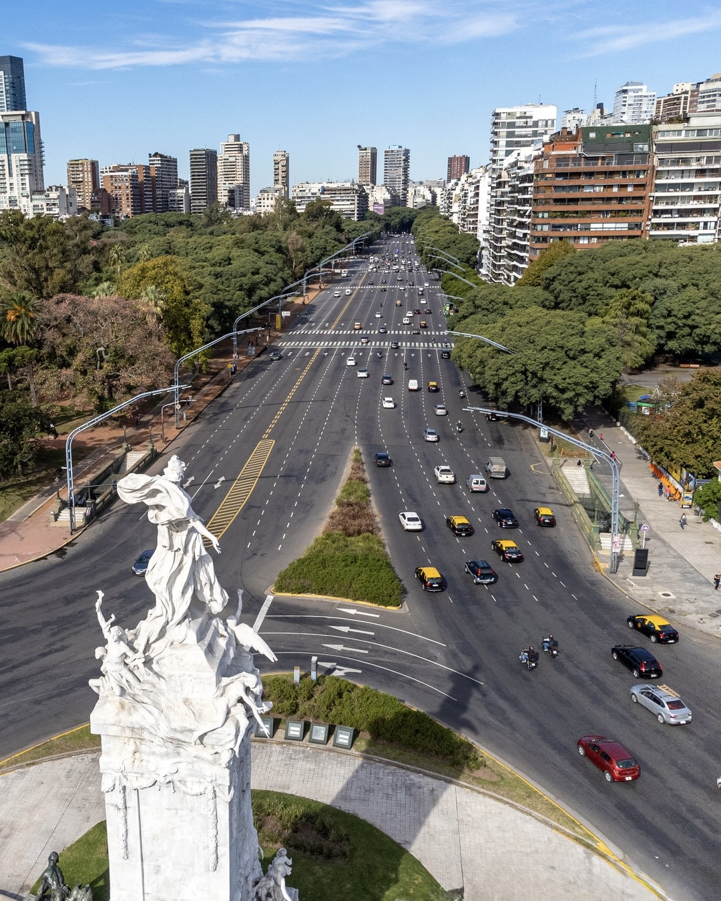

Acerca de Kaiser
Conocenos más de cerca
Inicios de Kaiser
Nuestra historia comenzó con la visión de fusionar la sofisticación porteña de la Avenida Libertador con el arte del café de especialidad. Desde nuestros inicios, nos propusimos crear un refugio exclusivo donde la calidad inigualable y la atención al detalle transformaran cada visita en un momento extraordinario. Lo que empezó como un sueño apasionado se ha consolidado hoy como un referente de distinción para los paladares más exigentes de la zona.
En cada rincón de nuestra cafetería, honramos el compromiso con la excelencia que nos define. Seleccionamos cuidadosamente granos de origen único y empleamos técnicas de vanguardia para garantizar una experiencia sensorial incomparable en cada taza. Más que servir café, nos dedicamos a cultivar un ambiente premium donde la elegancia y la pasión por el sabor perfecto convergen para deleite de nuestra distinguida comunidad.

-
Nuestro desarrollo
-
Fundación de Kaiser
En noviembre de 2010, dos apasionados por el café fundaron Kaiser con la visión de crear un espacio único donde la calidad y el servicio se fusionaran para ofrecer una experiencia inigualable.
-
Proceso de Inauguración
El proceso de inauguración fue cuidadosamente planificado para garantizar la excelencia en cada detalle.
-
Crecimiento
Kaiser cuenta actualmente con 30 empleados entre cocineros y personal de servicio.
-
Más sobre nosotros
-
Constante innovación
Kaiser se compromete constantemente con la innovación para ofrecer siempre lo mejor a sus clientes.
-
Apoyo a la comunidad
Kaiser se esfuerza por apoyar a la comunidad a través de diversas iniciativas y programas sociales.
-
Vías de ampliación
Estamos en búsqueda de nuevas oportunidades de expansión para seguir satisfaciendo a nuestros clientes.
-
Cercanía al cliente
Cada cliente es un mundo único que merece ser escuchado y atendido de la mejor manera.
Testimonio
"Visitar este refugio en Av. Libertador es, sin duda, el momento más gratificante de mi rutina diaria. No es solo la sofisticación de su blend exclusivo, que es sencillamente incomparable, sino la atmósfera íntima y el servicio impecable que te hacen sentir en un lugar verdaderamente especial. Una experiencia premium que redefine lo que significa disfrutar de un buen café en Buenos Aires. Altamente recomendable para los amantes de la excelencia." — Martina Zavaleta, Cliente Fiel

“ "La simplicidad de un ingrediente es un lujo." ”
Reservá tu mesa
No esperes más para disfrutar de nuestra deliciosa comida y agradable experiencia.